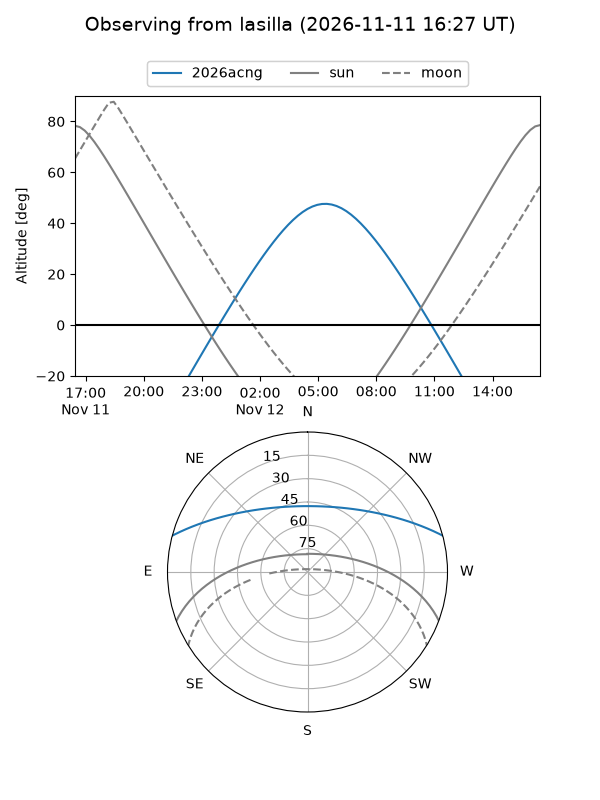
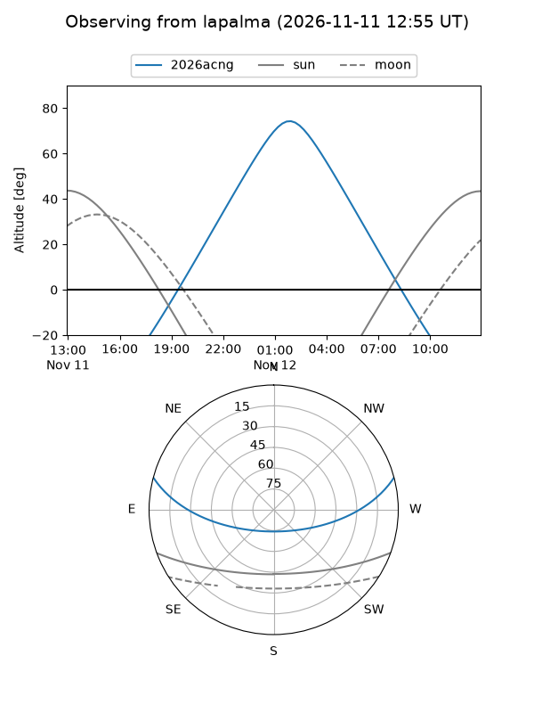
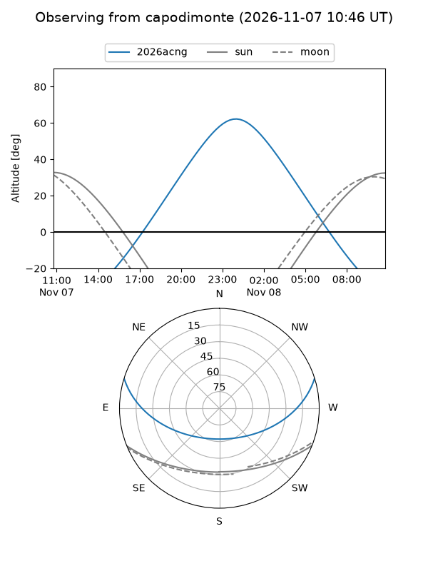
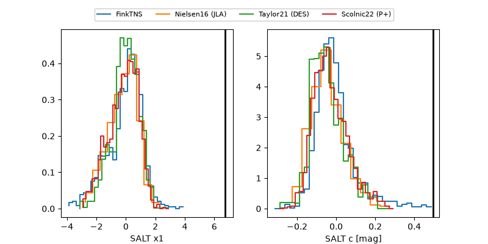

2026acng
Target 2026acng at 2026-11-09 11:00
Aliases and brokers:
FINK-ZTF: ztf.fink-portal.org/ZTF26accvaag
Lasair-ZTF: lasair-ztf.lsst.ac.uk/objects/ZTF26accvaag
ALeRCE-ZTF: alerce.online/object/ZTF26accvaag
YSE-PZ: ziggy.ucolick.org/yse/transient_detail/2026acng
TNS name: wis-tns.org/object/2026acng
Direct TNS query: direct search
alt names
ZTF26accvaag (ztf,fink_ztf)
2026acng (tns,yse)
ATLAS26ltx (atlas)
PS26jkl (panstarrs)
Coordinates:
equatorial (ra, dec) = 60.6612,+13.02243
equatorial (HMS+DMS) = 04:02:38.70,+13:01:20.74
galactic (l, b) = (178.2765,-28.66456)
Flags:
peak dt: +10.5
Photometry:
last ztfg=20.16, ztfr=19.13
3 ztfg, 5 ztfr detections
Lightcurve
Visibility



Additional plots
